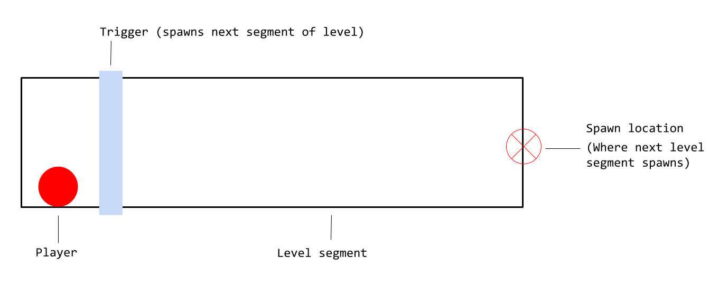
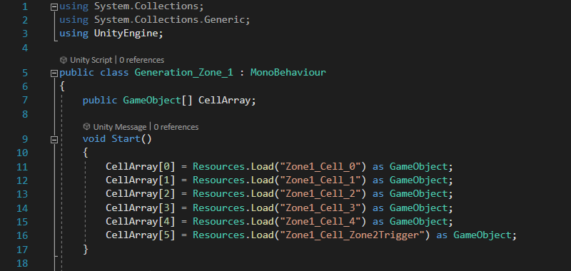
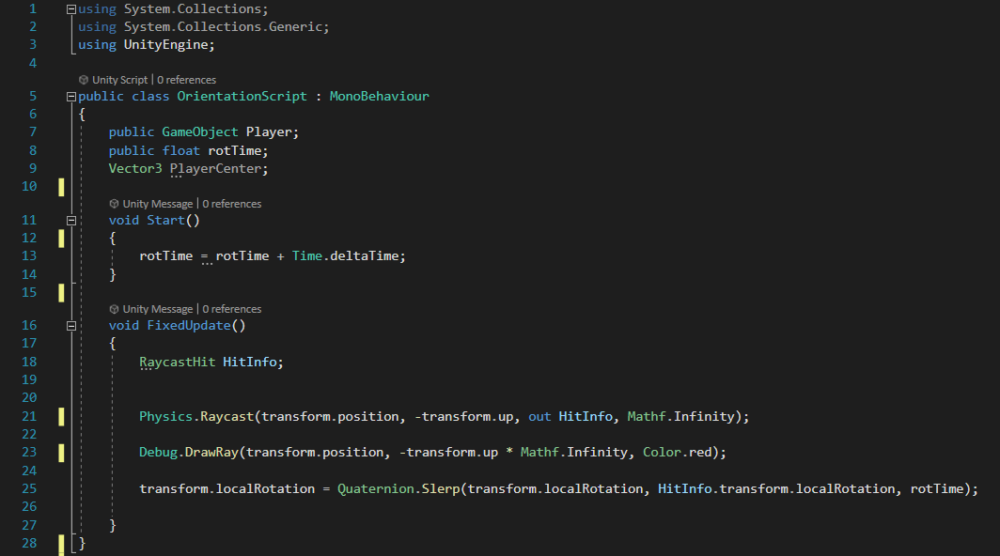

Project description
Tuber is a randomly generated endless runner for Windows PC. The world that the player runs through is a tube, and it spins as the player moves across different surfaces. The player can also jump to avoid obstacles and enemies that traverse the world in unique and challenging ways.
Links and stats
- Release Year: 2020
- Launched on windows PC
- 450+ downloads between itch.io and gamejolt.com
- 1000+ views and impressions
World generation

All of the biomes featured in Tuber are built off of a random level generation system.
This diagram outlines how level generation is triggered during gameplay. It works like so:
- Player collides with level spawn trigger
- Level spawn trigger executes a script that selects a level segment
- New random level segment is instantiated and placed at spawn location
- Collision trigger and spawn location are destroyed
- Restart from step #1
If we split the level generation system into two steps, the collision detection would be step #1. The code snipet above checks to see if a game object called "PlayerObject" (the player) has collided with the trigger.
The code snipet bove, shows step #2 of the random generation system. The array works by pulling a series of premade level segments from a folder called "resources". These level segments are then instantiated into the world.
Player orientation

The player orientation is the second major limb of Tubers game design. The orientation system allows the player to stick to the the surface below them while navigating the game world.
First I establish a raycast and store the location and rotation information of point in space where it collides with the floor, this is called the "Hit Info". The rotation data from the hit info is then applied to the player characters rotation transfroms. This, combined with a downward force designed to mimic gravity, allows the player to stick to any surface they're standing on.